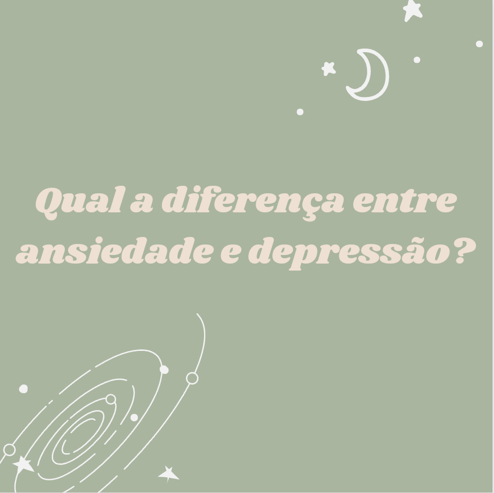

Clique aqui para voltar para a página principal

As ainformações do nosso instagram vão ficar aqui, ao menos de uma maneira mais detalhada
Primeiro post:
Diferença entre Ansiedade e Depressão
Ansiedade:
A ansiedade é caracterizada por um medo exacerbado em relação ao futuro, com uma preocupação exagerada que distorce o cenário real, alimentando diversos pensamentos negativos. A ansiedade, quando saudável, é somente uma expectativa. Quando manifestada como distúrbio, prejudica a qualidade de vida, alterando o sono (insônia) e o apetite (diminuição ou aumento). Com sofrimento manifestado e a impossibilidade de manter ou controlar a rotina, o comportamento ansioso pode ser definido como doença.

Depressão:
A depressão é considerada pela Organização Mundial da Saúde (OMS) como o "Mal do Século". No sentido patológico( que está relacionado com quaisquer doenças), há presença de tristeza, pessimismo, baixa auto-estima, que aparecem com frequência e podem combinar-se entre si. A depressão provoca ainda ausência de satisfação em coisas que antes faziam bem e grande oscilação de humor e pensamentos, que podem culminar em comportamentos e atos suicidas.
O tratamento é feito com auxílio médico profissional, por meio de medicamentos, e acompanhamento terapêutico conforme cada caso. O apoio dos familiares é fundamental para o tratamento da doença.
Segundo post:
Depressão será a donça mais comum do mundo em 2030, diz oms
De acordo com estudos feito pela OMS ( Organização Mundial da Saúde), a depressão deve se tornar a doença mais comum do mundo nos próximos vinte anos. Afetando uma grande gama de pessoas, gerando assim, um grande custo econômico para diversos governos, por conta do devido aos gastos com tratamento para a população e às perdas de produção recorrente. Segundo os médicos, os custos da depressão serão sentidos de maneira mais aguda nos países em desenvolvimento, já que eles registram mais casos da doença e têm menos recursos para tratar de transtornos mentais.

A depressão pode afetar qualquer tipo de pessoa, de várias classes sociais diferentes. Entretanto, podemos constatar que pessoas pobres têm uma dificuldade a mais quando se trata de transtornos mentais. A busca pelo tratamento pode ser difícil, por conta da falta de acesso a recursos fundamentais, como atendimento médico adequado e apoio psicológico. A instabilidade financeira constante pode aumentar os sintomas depressivos e iniciar um tipo de ciclo vicioso, onde as preocupações com recursos essenciais para a sobrevivência se misturam com emoções depressivas e sombrias. A ausência de uma rede de apoio sólido também é comum entre os pobres, o que torna o caminho para a reabilitação muito mais difícil. Além disso, a falta de oportunidades de educação e emprego, acaba gerando uma baixa autoestima, agravando ainda mais os sintomas dessa doença.
Terceiro post:
Brasil é o país mais ansioso do mundo, diz OMS;
Com o primeiro ano de pandemia, as taxas de depressão e ansiedade aumentaram 25%; mesmo considerado um sentimento comum, especialista alerta em casos frequentesO Brasil é considerado o país mais ansioso do mundo, de acordo com a OMS (Organização Mundial de Saúde). Antes da pandemia, a estimativa era que, aproximadamente 9,3% da população, o equivalente a 19,4 milhões, tivessem um grau de ansiedade.
Com estas constatações, retiradas do site ndmaismcom.br , surge um questionamento, porque o Brasil é um país tão ansioso? Bom, podemos atribuir a alguns aspectos sociais e políticos do nosso país. Dentre elas estão a solidão, desigualdade social, salários baixos, falta de segurança pública, estresse no trabalho, relações tóxicas e dentre outros aspectos. Muitas das situações citadas acima, são estruturais e estão presentes no nosso país desde seu começo, e não podem ser resolvidas de uma hora para outra, e sim com projetos criados pelo Governo Federal, porque são coisas mais complexas para serem resolvidas.
Concluindo, são muitas as causas que tornam o Brasil um país propício para seus cidadãos desenvolverem doenças mentais, e elas precisam ser identificadas e tratadas.
Quarto post:
Pesquisa realizada com alunos do EMED;
Realizamos uma pesquisa com alunos do emed para vermos seus conhecimentos sobre doenças mentais e vermos se ja tiveram alguma doença mental
Vale ressaltar que as pessoas responderam de maneira ânonima para não causar um disconforto nos alunos, segue o resultado das pesquisas:
*resultado das pesquisas* ps:quando estiver em minhas mãos eu atualizarei a página
Quinto post:
Geek Mundi 2023
Ontem, dia 01/07 ocorreu o primeiro evento geek do senac. Onde teve varias atividades interativas com os visitantes, foi uma experiência única participar desse evento. Além disso, teve um bate papo com a @luizacasparydubladora da personagem Ellie do jogo The last ofus e da série com o mesmo nome. Tirando a ambientação que teve do game no espaco do senac.

Os eventos geek são populares e contribuem significativamente para o desenvolvimento das comunidades e para a saude mental dos participantes.Eles oferecem um ambiente acolhedor aonde as pessoas podem se encontrar e compartilhar interesses.Grande parte dessas atividades também é praticada por meio de jogos eletrônicos, que podem melhorar a saúde mental,diminuindo o estresse e promovendo a sensação de dever cumprido. Para evitar problemas como de isolamento social, é fundamental equilibrar o uso dejogos com outras formas de autocuidado Agradecemos todos que nos ajudaram durante esse bimestre!!!
Sexto post:
Fabricantes de jogos usam táticas para viciar seus jogadores
Na atual indústria de jogos, títulos como Clash Royale são gratuitos para a maioria das pessoas porque um pequeno número de jogadores paga por recursos extras, como armas especiais e mais vidas. Neste modelo que oferece gratuidade para jogar, os desenvolvedores precisam encontrar o delicado equilíbrio entre atrair as massas e incentivar os jogadores que gastam muito e precisam de ambos para ter um título de sucesso.
As editoras de jogos japonesas e sul-coreanas foram pioneiras na arte de ganhar dinheiro com títulos gratuitos para jogar.
Durante anos, elas empregaram as equipes chamadas Live Ops, que usam eventos, competições e ofertas por tempo limitado para que as pessoas paguem. À medida que essas técnicas amadurecem, as empresas estão se voltando para a inteligência artificial e a mineração de dados para influenciar os jogadores ( estratégias semelhantes às usadas por Google e Facebook para direcionar anúncios publicitários).